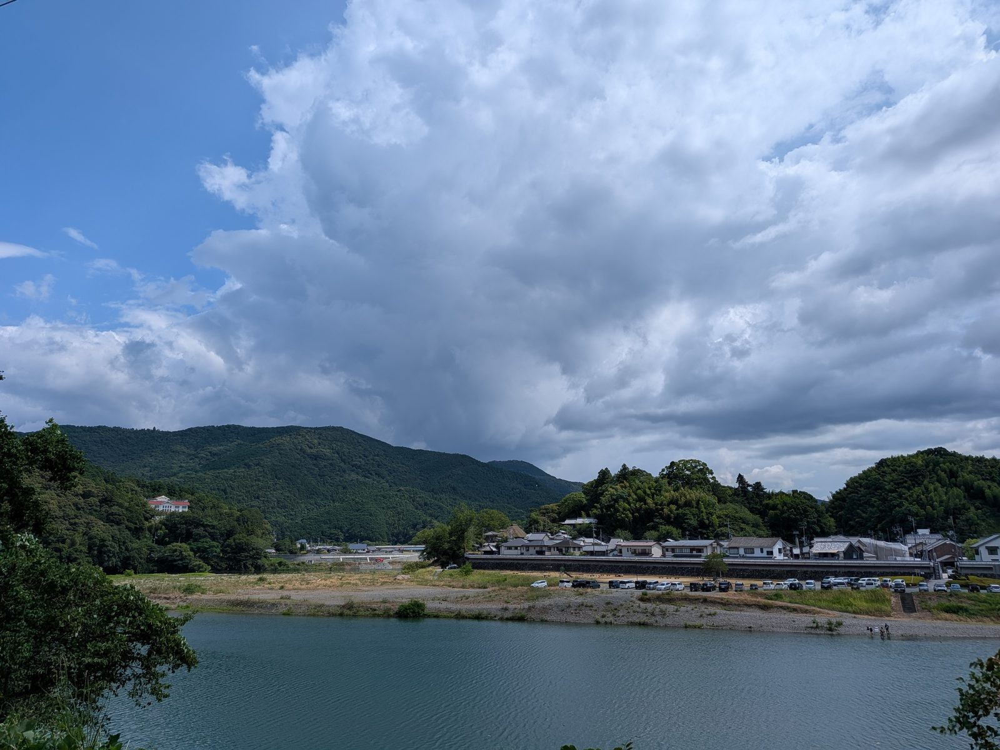

大洲の暮らし ・ 出典: 国土地理院「浸水推定段彩図」/国土交通省大洲河川国道事務所 ・ 約7分で読める

要点
2018年７月の西日本豪雨で、大洲市は大きな被害を受けた。肱川が氾濫し、市街地の広い範囲が水につかった。
このときの浸水の深さを、国土地理院が地図にまとめている。「浸水推定段彩図」という資料だ（国土地理院技術資料D1-No.920）。
１枚のＰＤＦなのだが、拡大して地名を追っていくと、どこがどれだけ深く沈んだのかが具体的に読める。
地図に書かれている作成方法の説明が、そもそも興味深かった。
「この地図は、７月７日の映像等の情報から浸水した範囲の端の地点を確認し、その地点の高さから標高データを用いて浸水面を推定し、浸水面から水深を算出し深さごとに色別に表現しています」
手順を分解するとこうなる。
つまり水がどこまで来ていたかという「跡」から、逆算で深さを割り出している。
水位計が全域にあるわけではないので、水際の線と地形の標高データを組み合わせて面を復元する、という発想だ。
前提として「水面は水平である」という物理が効いている。ある１点の水際の標高が分かれば、その周囲の浸水面の高さも推定できる。
そこから地面の標高を引けば、各地点の水深が出る。地形の全国データ（数値標高モデル）が整備されているからこそ成立する手法である。
色分けは０ｍ／１ｍ／２ｍ／３ｍ／４ｍ／５ｍ以上の６段階。１ｍごとに色が濃くなる。
地図を拡大して、最も濃い「５ｍ以上」の区分がどこに出ているかを確認した。
結論から言うと、大洲城のある中心市街地ではなかった。色が濃いのは大きく２か所ある。
１つ目は、肱川本流の下流側に広がる東大洲・平地一帯。地図の右上に向かって大きく広がる浸水域で、ＪＲの線路と国道が走るあたりが最も濃い。五郎、若宮、田口、和田といった地名が並ぶ範囲だ。
２つ目は、支流の矢落川沿いにある新谷周辺。地図の右下にある、根太山のふもとに沿った細長い浸水域で、ここも最も濃い区分になっている。
一方、大洲城や肱南・肱北といった中心市街地の側は、比較的色が薄い。
まったく浸水していないわけではないが、５ｍ以上の区分が広がっているのは上の２か所だった。
城下町が微高地に立地しているという、地形の理屈どおりの結果になっている。
左手の菅田町・上田渡のあたりにも、肱川に沿って細長い浸水域がある。
深さ５ｍ以上というのは、家の１階どころか２階の床を越える高さだ。
色の濃淡だけで、当時の水の高さがここまで具体的に示されているとは思わなかった。
段彩図は「深さ」を示す地図だが、被害の実数までは載っていない。
そこで国土交通省の大洲河川国道事務所がまとめた「平成30年７月豪雨災害の概要」を開いた。ここに実測ベースの数字が載っていた。
3,005戸のうち、床上浸水が2,225戸。浸水した家の約74％が床上まで水が来ている。
段彩図で「５ｍ以上」の区分があることを考えれば当然だが、数字で見ると重い。
浸水面積約1,372ヘクタールは、13.72平方キロメートル。
南海トラフ地震で想定されている大洲市の浸水面積が70ヘクタールであることと比べると、約20倍にあたる。
大洲市にとっての水害は、津波より圧倒的に河川氾濫であるということが、この２つの数字を並べるとはっきりする。
同じ資料に、過去の水害との比較も載っていた。それまで肱川で過去最高水位を記録し、大きな被害となったのが平成16年の台風16号である。
| 地区 | 平成30年７月豪雨 | 平成16年台風16号 | 倍率 |
|---|---|---|---|
| 肱川全体 | 約887ｈａ | 約564ｈａ | 約1.6倍 |
| 東大洲地区 | 約462ｈａ | 約230ｈａ | 約2.0倍 |
| 春賀地区 | 約83ｈａ | 約60ｈａ | 約1.4倍 |
| 八多喜地区 | 約66ｈａ | 約40ｈａ | 約1.7倍 |
東大洲地区だけで462ヘクタール。肱川全体887ヘクタールの半分以上を１地区が占めていて、しかも平成16年の約２倍に広がっている。
段彩図で最も濃い色が出ていた場所と、この数字はぴったり一致する。
なお前段の3,005戸・1,372ヘクタールは大洲市全域（矢落川など支流の氾濫を含む）の数字で、この表の887ヘクタールは肱川本川の浸水範囲を指している。集計の範囲が違うので、直接引き算はできない。
もう一つ、資料の結論が重要だった。「『計画規模の浸水想定区域図』との比較図では、一部の地域を除き浸水範囲が概ね一致していることが確認された」。
計画規模とは年超過確率1/100（100年に１回の確率）の降雨で肱川・矢落川が氾濫した場合のシミュレーションを指す。
平成30年７月豪雨の実際の浸水範囲は、その想定とほぼ重なっていた。
これは怖い一致だと思う。ハザードマップは「起きるかもしれない」の絵ではなく、実際にほぼそのとおりに起きた絵だったということになるからだ。
逆に言えば、今のハザードマップを見れば、同じ規模の雨が降ったときに自分の家がどうなるかがかなりの精度で分かるということでもある。
同じ資料には、７月７日朝のタイムラインが分単位で記録されていた。
ダムの操作開始から東大洲の浸水まで、およそ４時間半。上流の菅田から下流の東大洲へ、水が順に移っていったことが時刻から読み取れる。
「異常洪水時防災操作」というのは、ダムに入ってくる水の量と同じだけ放流する操作のことだ。
ダムが満杯に近づくと、それ以上ためられないので、入ってきた分をそのまま流すしかなくなる。ダムの調節機能が限界に達した瞬間を指す用語である。
段彩図が「７月７日の映像等の情報から」作られているのは、まさにこの日の出来事を記録した地図だからだ。
段彩図の下部には、注意書きがある。
「実際に浸水のあった範囲でも把握できていない部分、浸水していない範囲でも浸水範囲として表示されている部分があります」
作り方を思い出すと、この但し書きの意味が分かる。７月７日の映像がなかった場所は、そもそも「端の地点」を確認できない。
逆に、水面が水平だという前提で面を張るので、堤防や盛土で守られていた場所まで塗られてしまうことがある。
あくまで「推定」の地図であることは、踏まえておきたい。個別の土地の浸水実績を正確に知りたい場合は、この地図ではなく市や国交省の記録にあたる必要がある。
もっと新しい情報を知りたい場合は、国土交通省の「重ねるハザードマップ」が使える。
住所を入れると、洪水・土砂災害・津波などの想定区域を地図に重ねて表示できるサイトで、段彩図と違って「これから起きうること」を示している。
段彩図で過去を確認し、重ねるハザードマップで将来を確認する、という使い分けになる。
令和８年度当初予算を見ると、豪雨から８年たった今も、関連事業が続いていた。
「浸水センサ」が予算に入っているのが目を引いた。道路などの冠水を検知して知らせる機器で、通信料まで計上されている。
人が見に行かなくても浸水を把握する仕組みを、平常時から動かしているということになる。
「田んぼダム」も同じ発想だ。田んぼの排水口に堰板を付けて、雨水を一時的にためて流出を遅らせる。
１枚あたりの効果は小さいが、流域全体で数を揃えると川に集まる水のピークを下げられる。
ダムや堤防だけで守るのではなく、流域全体で水を受け止めるという考え方を「流域治水」といい、平成30年７月豪雨のような災害を受けて全国で進められている。
大川地区復興支援事業という名前が予算書に残っているのも印象的だった。８年たっても「復興」という語がついた事業が動いている。
自分の住む場所やよく行く場所を、この地図で確認してみると、ニュース映像で見るのとはまた違う実感がある。
そして今回いちばん重かったのは、実際の浸水範囲が「100年に１回の想定」とほぼ一致していたという国交省の結論だった。
想定は絵空事ではなかった。いま公開されているハザードマップも、同じ精度で次を示しているということになる。